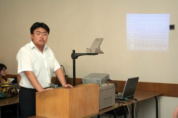
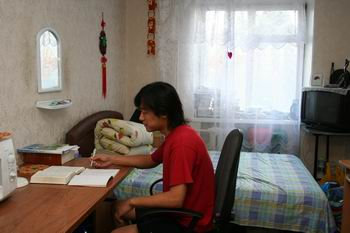

ЦЕНТР ПО РОБОТІ З ІНОЗЕМНИМИ СТУДЕНТАМИ

директор центру
к.держ.упр.
Олександр Вікторович
БОГДАНОВ
Навчання іноземних громадян у Донецькому державному університеті управління розпочалося з 1993 року.
Центр по роботі з іноземними студентами здійснює свою діяльність за напрямами «Пiдготовка ноземних громадян за базовими акредитованими напрямами, спецiальностями» та «Пiдготовка iноземних громадян до вступу у вищi навчальнi заклади» (чергова ліцензія серія АВ № 552610 від 21.09.2010 строком до 01.07.2015)
Підготовка іноземних громадян у ДонДУУ здійснюється відповідно до чинного законодавства України, освітніх стандартів, базується на загальній середній освіті іноземних громадян за національними освітніми стандартами і має самостійний завершений характер. Вона розрахована на осіб, які бажають навчатися у вищих навчальних закладах України.
До теперішнього часу довузівську підготовку за економічним профілем у ДонДУУ здійснили більше 80 іноземних громадян з 10 країн Азії і Африки.
Понад 60 іноземних громадян з 16 країн Європи, Азії, Африки одержали дипломи бакалаврів, спеціалістів, магістрів з менеджменту, економіки, фінансів.
Мета центру по роботі з іноземними студентами – підготовка іноземних громадян до навчання у вищих навчальних закладах України, тобто формування практичних навичок з української або російської мови і загальноосвітніх предметів за програмами середньої школи України, з надання первинних знань у сфері економіки та менеджменту на початковому етапі, а також забезпечення візово-реєстраційної, організаційної, культурно-виховної роботи зі слухачами підготовчого відділення і студентами базових факультетів ДонДУУ.

Для реалізації цієї мети центр здійснює наступні завдання:
•провадить рекламно-інформаційну роботу по залученню на навчання в Україні іноземних громадян;
• організує запрошення кандидатів на навчання з числа іноземних громадян і контролює їхній в«їзд в Україну;
• організує розробку навчальних програм у відповідності до вимог Міністерства освіти і науки, молоді і спорту України
• забезпечує начальний процес методичними матеріалами
До початку навчання іноземний громадянин повинен надати до центру по роботі з іноземними студентами наступні документи:
• національний паспорт;
• копію документа про освіту*;
• копію документа про народження*;
• медичний сертифікат про стан здоров’я і відсутність протипоказань для проживання в Україні*;
• медичне свідоцтво про перевірку на ВІЛ-інфекцію*;
• 6 кольорових фотографій розміром 6х4 см;
• зворотний авіаквиток з відкритою датою відльоту строком на один рік.
* — документи з нотаріально (офіційно) завіреним перекладом і легалізовані у посольстві України в установленому порядку
На початковому етапі навчання протягом дев’яти місяців іноземні громадяни вививчають російську мову, українську мову, основи економіки, країнознавство України, економічну і соціальну географію світу, математику, основи інформатики. Досвідчені викладачі забезпечують індивідуальний підхід і якісну підготовку для продовження навчання у вищому навчальному закладі економічного профілю.

Після успішного закінчення підготовчого відділення ДонДУУ іноземний громадянин має право продовжити навчання в університеті на основному етапі за всіма базовими акредитованими напрямами і спеціальностями.
Донецький державний університет управління – державний навчальний заклад четвертого рівня акредитації. Головне завдання діяльності університету визначається як підготовка кадрів вищої кваліфікації для державних структур, підприємств, організацій, виробничих об'єднань, фінансових установ з різною формою власності; розвиток особистості, творчих здібностей людини, здатності забезпечити успіх своєї організації у мінливих умовах ринкової економіки; володіння двома іноземними мовами, сучасними комп'ютерними технологіями.
Освітня діяльність ДонДУУ має за головну мету підготовку сучасних управлінських кадрів на базі органічного поєднання освітньої, професійної, практичної та наукової діяльності, інтенсивного розвитку міжнародних зв'язків і виховної роботи.
Вартість навчання на 2011-2012 навчальний рік для іноземних громадян складає
• підготовче відділення – 1200 умовних одиниць на рік.
• базові факультети на освітньо-кваліфікаційному рівні “бакалавр” – 1600 умовних одиниць на рік
• базові факультети на освітньо-кваліфікаційному рівні “магістр” – 2000 умовних одиниць на рік.
Іноземні громадяни проживають у комфортабельному гуртожитку у кімнатах на 2 особи. Вартість проживання на 2011-2012 навчальний рік складає 250 умовних одиниць на рік.
Навчання іноземних громадян у Донецькому державному університеті управління дозволяє готувати для закордонних країн професійних фахівців у галузі менеджменту, здатних здійснювати вагомий внесок у розвиток національної економіки їхніх країн.